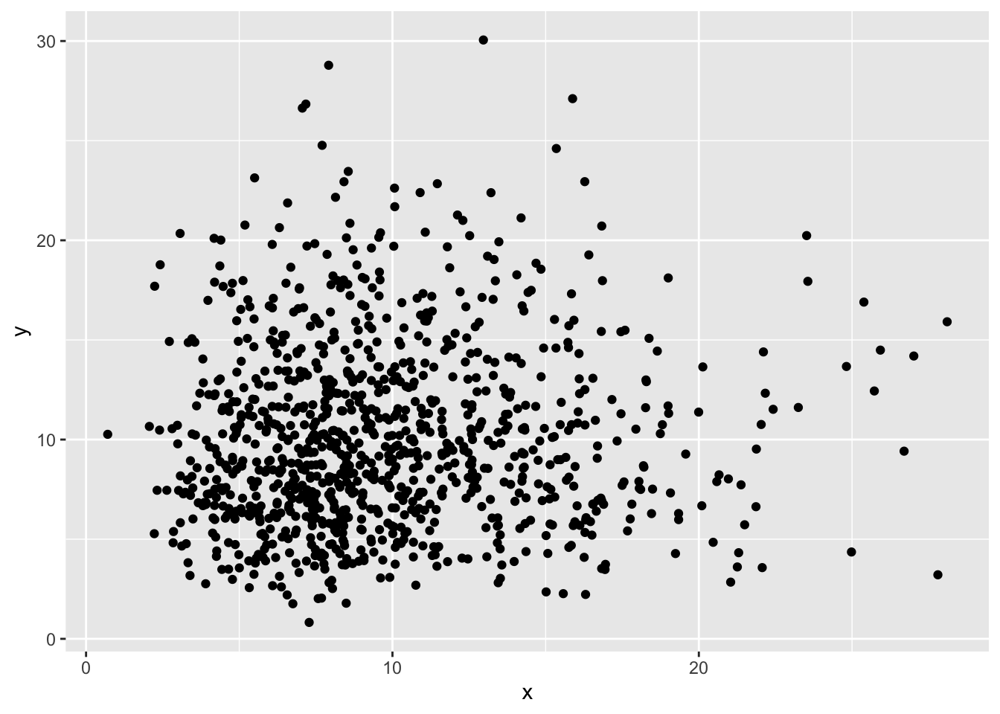

identity(list(1, "Daten und Information", TRUE))[[1]]
[1] 1
[[2]]
[1] "Daten und Information"
[[3]]
[1] TRUEVariablen sind spezielle R Symbole (s. Kapitel 4) mit denen Werte für die spätere Verwendung markiert werden. Variablen sind also Bezeichner, welche die eigentlichen Werte substituieren.
Damit eine Variable einen Wert substituieren kann, muss der Wert der Variablen zugewiesen werden. Ein Wert kann dabei ein einzelner Wert eines fundamentalen Datentyps oder eine komplexe Datenstruktur sein.
Bei der ersten Zuweisung wird eine Variable deklariert (Definition 4.3).
Beispiel 8.1 (Den Wert 1 der Variable var1 zuweisen)
var1 = 1Variablen müssen in einem Geltungsbereich eindeutig sein. Wird nämlich einer Variable mehrfach zugewiesen, dann ist der Wert einer Variablen der Wert der letzten Zuweisung.
Der Geltungsbereich (engl. Scope) einer Variablen wird durch Funktionskörper definiert. R kennt dabei drei Arten von Geltungsbereichen. In diesem Zusammenhang spricht man von äusseren (engl. outer scope) und inneren Geltungsbereichen (engl. inner scope).
Grundsätzlich können alle Variablen in einem Geltungsbereich verwendet werden, die in einem der äusseren Geltungsbereiche deklariert und zugewiesen wurden. Variablen der inneren Geltungsbereiche sind in den äusseren Geltungsbereichen nicht verfügbar.
Der globale Geltungsbereich gilt für alle Variablen, die ausserhalb einer Funktion oder einer Bibliothek erzeugt werden.
Der Funktionsgeltungsbereich ist auf den Funktionsköper einer Funktion beschränkt.
Der Modulgeltungsbereich ist der globale Geltungsbereich einer Funktionsbibliothek. Variablen dieses Geltungsbereichs sind im globalen Geltungsbereich eines R-Scripts nicht erreichbar. In der Praxis spielt dieser Geltungsbereich eine untergeordnete Rolle
Die letzte Zuweisung ist nicht zwingend die Zuweisung, die als letztes im Code erscheint.
In R bilden Funktionen die Grundlage für die Datenverarbeitung. Fast alle Spracheelemente sind als Funktionen umgesetzt.
R hat eine explizite Identitätsfunktion identity(). Diese Funktion setzt die Identität für einen Parameter um. Die Funktion wird zur allgemeinen Identitätsfunktion, indem die Parameterliste als Liste übergeben.
Beispiel 8.2 (Mehrparametrische Indentität)
identity(list(1, "Daten und Information", TRUE))[[1]]
[1] 1
[[2]]
[1] "Daten und Information"
[[3]]
[1] TRUETransformationen verändern die Werte eines Vektors, wobei das Ergebnis immer ein Ergebnis der Länge des ursprünglichen Vektors hat.
In R sind alle arithmetischen Operatoren Transformatoren (s. Beispiel 8.3)
Beispiel 8.3 (Additive Transformation eines Zahlenvektors (Skalarprodukt))
c(1, 9 , 7, 3, 5) * 2[1] 2 18 14 6 10Eine besondere Gruppe innerhalb der Transformationen sind die Matrizen-Produkte (Kapitel 13) sowie das Umformen von Vektoren (Kapitel 16). Diese Transformationen erzeugen aus mehreren Vektoren Vektorfelder, wobei die urspünglichen Werte erhalten bleiben bzw. durch eine Multiplikation umgeformt werden.
Aggregationen fassen Werte eines Vektors zusammen. Das Ergebnis von Aggregatoren ist oft ein einzelner Wert, kann aber auch mehrere Werte umfassen. In solchen Fällen hat das Aggregat höchstens die Länge des Eingabevektors.
Typische Aggregationen sind die Summe (sum(), Beispiel 8.4) und andere statistische Kennzahlen (Kapitel 17).
Beispiel 8.4 (Summenaggregation)
c(1, 2, 3, 4) |> sum()[1] 10Die tidyverse-Bibliothek kennt sog. Transformationsverben. Das sind spezielle Funktionen für die Arbeit mit Datenrahmen. Diese Funktionen vereinheitlichen den Umgang mit Daten, indem sie die Komplexität der notwendigen Arbeitsschritte verbergen. Gleichzeitig machen sie die Intention einer Datentransformation sichtbar.
| Funktion | Beschreibung |
|---|---|
mutate() |
Führt eine oder mehrere Transformationen über einen Datenrahmen durch. |
arrange() |
Ordnet die Datensätze eines Datenrahmens neu an (Kapitel 11). |
summarise() |
Führt eine oder mehrere Aggregationen über einen Datenrahmen durch. |
count() |
Zählt die Anzahl der Datensätze, optional auch entlang gemeinsamer Eigenschaften (Kapitel 12). |
rename() |
Benennt Vektoren um. |
select() |
Wählt Vektoren in einem Datenrahmen aus. |
filter() |
Aggregiert einen Datenrahmen mithilfe von logischen Ausdrücken (Kapitel 11) |
group_by()/ungroup() |
Gruppiert einen Datenrahmen mithilfe gemeinsamer Eigenschaften (Kapitel 14) |
pivot_longer()/ pivot_wider() |
Überführt einen Datenrahmen von der Breitform in die Langform, bzw. umgekehrt (Kapitel 16). |
nest()/unnest() |
Bettet zusammengehörende Teile eines Datenrahmens als Unterstruktur in einen Datenrahmen ein, bzw. bettet diese Teile aus (Kapitel 16). |
Die beiden wichtigsten Funktionen sind mutate() für Transformationen und summarise() für Aggregationen. Das Ergebnis dieser Funktionen ist immer ein neuer Datenrahmen, welcher die transformierten Daten enthält.
Generatoren bilden eine besondere Funktionsgruppe in R. Mit ihnen lassen sich Werte erzeugen. In dieser Gruppe gibt es zwei Arten:
Sequenzgeneratoren erzeugen Sequenzen von Werten. Sequenzgeneratoren werden in R zur systematischen Erzeugung von Vektoren verwendet.
Die beiden wichtigsten Funktionen dieser Gruppe sind die Funktionen seq() und rep().
Die Funktion seq() erzeugt eine Sequenz von Werten mit fester Schrittweite. In R wird eine Sequenz über einen Startwert sowie die Länge, die Schrittweite oder den Endwert definiert.
Beispiel 8.5 (Sequenzen mit seq() erzeugen)
seq(5) [1] 1 2 3 4 5seq(2, 5) [1] 2 3 4 5seq(2, len = 5) [1] 2 3 4 5 6seq(2, len = 3, by = 2) [1] 2 4 6Sequenzen mit der Schrittweite 0 wiederholen den Startwert für die erforderliche Länge. Solche Sequenzen werden relativ häufig verwendet, weshalb Beispiel 8.6 etwas umständlich ist.
Beispiel 8.6 (Einsvektor der Länge 4 mit seq() erzeugen)
seq(1, len = 4, by = 0)[1] 1 1 1 1Diese Operation kann mit R vereinfacht werden. Hierfür diehnt die Funktion rep() (für replicate). Die Funktion rep() erfordert den Wiederholungswert sowie die Anzahl der Wiederholungen (Beispiel 8.7).
Beispiel 8.7 (Einsvektor der Länge 4 mit rep() erzeugen)
rep(1, 4)[1] 1 1 1 1Definition 8.1 Zufallszahlen sind numerische Werte, die zufällig ausgewählt werden.
Zufallszahlen werden in normalen Computer-Programmen relativ selten verwendet.
Die Anwendungsgebiete von Zufallszahlen sind die Krypografie und die Simualation.
In den Datenwissenschaften sind Simulationen ein wichtiges Werkzeug für analytische und prediktive Modelle, insbesondere für die künstliche Intelligenz.
R bietet die Funktion runif() zur Erzeugung von gleichmässig verteilten Zufallszahlen. Die Funktion generiert zufällig reelle Werte im Intervall von \left]0, 1 \right[. In diesem Zusammenhang bedeutet gleichmässig verteilt, dass alle Werte mit gleicher Wahrscheinlichkeit erzeugt werden.
Gleichmässig verteilte Werte werden auch als uniforme oder uniform-verteilte Werte bezeichnet.
Beispiel 8.8 (Fünf Zufallswerte mit runif() erzeugen)
runif(5)[1] 0.3629035 0.7706022 0.2821078 0.9810012 0.2153341Aus diesen Werten lassen sich beliebige Zufallsvektoren erzeugen. Um Werte in anderen Intervallen zu erzeugen, können der Funktion eigene Intervallgrenzen übergeben werden.
Werden uniformverteilte Zufallswerte gegenübergestellt, dann sind diese Werte gleichmässig im Intervall verteilt (Abbildung 8.1).
Ganzzahlen dürfen nicht durch Runden , sondern müssen durch Entfernen des Nachkommaanteils mit trunc() erzeugt werden.
Beispiel 8.9 (Zufällige Ganzzahlen in einem Intervall erzeugen)
runif(10, min = -10, max = 10) |> trunc() [1] 7 -5 5 -6 8 3 5 8 9 0Neben den uniformverteilten Werten, stellt R Funktionen zum Erzeugen von Zufallswerten mit anderen Verteilungen an. Die Grundlage für diese Zufallswerte bilden die statistischen Verteilungen, wie z.B. die Normalverteilung (mit rnorm()), die F-Verteilung (mit rf()), die Binomialverteilung (mit rbinom()) oder die \chi^2-Verteilung (mit rchisq()).
In diesen Verteilungen sind nicht alle Werte gleich wahrscheinlich. Dadurch erscheinen in einer Visualisierung die Werte geklumpt (Abbildung 8.2).

Alle R-Operatoren sind Funktionen. R kennt 29 vordefinierte Operatoren, die zwei Werte verknüpfen. Zu diesen Operatoren gehören die auch die arithmetischen Operatoren für die Grundrechenarten.
| Operator | Beschreibung | Art |
|---|---|---|
+ |
Plus, sowohl unär als auch binär | arithmetisch |
- |
Minus, sowohl unär als auch binär | arithmetisch |
* |
Multiplikation, binär | arithmetisch |
/ |
Division, binär | arithmetisch |
^ |
Potenz, binär | arithmetisch |
%% |
Modulo, binär | arithmetisch |
%/% |
Ganzzahldivision, binär | arithmetisch |
%*% |
Matrixprodukt, binär | arithmetisch, Matrix |
%o% |
äusseres Produkt, binär | arithmetisch, Matrix |
%x% |
Kronecker-Produkt, binär | arithmetisch, Matrix |
< |
Kleiner als, binär | logisch |
> |
Grösser als, binär | logisch |
== |
Gleich, binär | logisch |
!= |
Ungleich, binär | logisch |
>= |
Grösser oder gleich, binär | logisch |
<= |
Kleiner oder gleich, binär | logisch |
%in% |
Existenzoperator, binär | logisch |
! |
unäres Nicht | logisch |
& |
Und, binär, vektorisiert | logisch |
&& |
Und, binär, nicht vektorisiert | logisch |
| |
Oder, binär, vektorisiert | logisch |
|| |
Oder, binär, nicht vektorisiert | logisch |
<-, <<-, = |
linksgerichtete Zuweisung, binär | Zuweisung |
->, ->> |
rechtsgerichtete Zuweisung, binär | Zuweisung |
[ |
Indexzugriff (Vektoren), binär | Index |
$, [[ |
Listenzugriff, binär | Index |
~ |
funktionale Abhängigkeit, sowohl unär als auch binär | Funktionen |
: |
Sequenz (in Modellen: Interaktion), binär | Funktionen |
|> |
Funktionsverkettung | |
? |
Hilfe | spezial |
Im R-Umfeld wird oft von Modellen geschrieben und gesprochen. Modelle sind spezielle Funktionen, die Beziehungen zwischen Daten beschreiben, ohne eine mathematisch exakte Beziehung vorzugeben. Modelle werden in der Statistik und Stochastik eingesetzt, wenn die exakten Beziehungen zwischen Daten unbekannt sind.
Beispiel 8.10 (Exakte lineare Beziehung zwischen Daten)
f = function (x, c) 2 * x + 3 * cBeispiel 8.11 (Beziehung zwischen Daten mit Interaktion als Modell)
f = y ~ x : cHinter jedem Operator steht eine Funktion, die mit den beiden Operanden als Parameter ausgeführt wird, um das Ergebnis des Operators zu bestimmen. Daraus folgt, dass jeder Operator auch als Funktionsbezeichner verwendet werden kann. In diesem Fall muss R mitgeteilt werden, dass der Operator nun als Funktionsbezeichner verwendet werden soll. Der Operator muss also mit Backticks als Bezeichner markiert werden.
Beispiel 8.12 (+-Operator als Funktionsbezeichner)
`+`(1, 2)[1] 3R kennt zwei Zuweisungsoperatoren: <- und ->. Die Zuweisung erfolgt in Richtung des Pfeils. Daneben wird der =-Operator ebenfalls als (inoffizieller) Zuweisungsoperator unterstützt.
Ein Zuweisungsoperator erwartet immer einen Bezeichner und eine Operation als Parameter. Das Ergebnis der Operation wird als Wert dem Bezeichner zugewiesen.
Weil nicht immer klar ist, ob <- oder = verwendet werden soll, lautet die offizielle Kommunikation, dass für Variablenzuweisungen der <--Operator verwendet werden sollte. Das einfache Gleich (=) weist einen Wert einem Funktionsparameter zu. Gerade in tidy R ist dieser Unterschied nur schwer nachvollziehbar, weil bestimmte Parameter wie Variablen behandelt werden.
In diesem Buch wird für die linksgerichtete Zuweisung immer das Gleichzeichen (=) verwendet, so dass eine Zuweisung eines Werts an eine Variable und an einen Parameter gleichwertig behandelt wird. Dadurch wird die Lesart etwas vereinfacht. Zusätzlich wird die rechtsgerichtete Zuweisung konsequent als Abschluss für einen primären Datenstrom (s. Kapitel 8.4) eingesetzt.
Der Ausführenoperator (()) gilt in R offiziell nicht als Operator, weil dieser nicht als Funktion umgesetzt werden kann. Es gibt zwar die Funktion do.call(), um eine Funktion auszuführen. Wenn diese Funktion als Ausführungsoperator eingesetzt wird, müsste do.call() sich selbst aufrufen, um sich selbst auszuführen. Dieses Problem wird von R dadurch gelöst, dass ( und ) als eigene Symbole erkannt werden und immer eine Funktionsausführung anzeigen.
Der Hilfeoperator ist ein besonderer Operator, weil dieser die Interaktion mit der Dokumentation von Funktionen und Konzepten ermöglicht. Der Hilfeoperator wird normalerweise nicht in einem R-Script verwendet und hat keine Bedeutung für die Datenverarbeitung.
Der Hilfeoperator kann direkt mit einem Bezeichner aufgerufen werden. Existiert für den Bezeichner eine Dokumentation, dann wird diese angezeigt.
Beispiel 8.13 (Dokumentation der Funktion is.character())
?is.characterWird der Hilfeoperator mit sich selbst aufgerufen, wird der nächste Wert als Suchbegriff gewertete und eine Suche über alle Hilfedokumente auf dem System durchgeführt.
Beispiel 8.14 (Dokumentationssuche nach Operatoren)
??operatorR unterstützt die spezielle Funktionsverkettung mit dem |>- Operator. Dadurch lassen sich Funktionsfolgen direkt in R ausdrücken. In Kombination mit der rechtsgerichteten Zuweisung (->) ist es möglich, Datenströme durch eine Funktionskette von einem Ausgangswert zu einem Ergebnis in der natürlichen Reihenfolge aufzuschreiben.
Beispiel 8.15 (Funktionskette mit abschliessender Zuweisung)
# library(tidyverse)
iris |>
filter(Species == "setosa") |>
arrange(desc(Petal.Length)) ->
sortierteSetosaWerteNeben der speziellen Funktionsverkettung (|>) gibt es einen sehr ähnlichen Verkettungsoperator: %>%. Dieser Verkettungsoperator ist Teil der tidyverse-Bibliothek und gleicht der speziellen Funktionsverkettung mit dem kleinen Unterschied, dass die Parameterzuweisung für die nachfolgende Funktion zusätzliche Kontrollmöglichkeiten bietet, die der speziellen Funktionsverkettung fehlen.
In R werden Funktionen mit dem function-Schlüsselwort erstellt. Eine R-Funktion besteht aus einer Parameterliste und einem Funktionskörper. Die Parameterliste wird in Klammern hinter dem Wort function angegeben. Der Funktionskörper kann eine einzelne Operation oder ein Block sein. Das Ergebnis einer Funktion ist das Ergebnis der letzten Operation des Funktionskörpers.
Beispiel 8.16 zeigt eine Funktionsdeklaration, die einen parameter akzeptiert. Die Funktion quadriert diesen Wert und zieht vom Ergebnis 1 ab. An diesen Operationen wird erkannt, dass die Funktion nur Werte vom Datenyp Zahlen als parameter akzeptiert.
Parameter sind in R spezielle Variablen, mit denen Werte an eine Funktion übergeben werden. Parameter existieren nur innerhalb einer Funktion während der Ausführung des Funktionskörpers. Es kommt sehr häufig vor, dass ausserhalb einer Funktion Variablen mit gleichem Bezeichnern vorhanden sind. Ein Parameter überschreibt diese Variablen nicht.
Beispiel 8.16 (Eine Funktion deklarieren)
function (parameter) {
parameter ^ 2 - 1
}Damit eine Funktion sinnvoll verwendet werden kann, muss sie zuerst einer Variablen zugewiesen werden. Der Bezeichner einer Funktion sollte möglichst die zentrale Bedeutung einer Funktion beschreiben.
Die Wahl eines guten Funktionsbezeichners hängt vom jeweiligen Geltungsbereich ab.
Mathematische Funktionen werden oft mit f(x) oder g(x) usw. geschrieben. In R sind solche Bezeichner ebenfalls zulässig, solange sie eindeutig sind. Solche sehr kurzen Funktionsbezeichnern sollten speziell gekennzeichnet und dokumentiert werden.
Weil das Schlüsselwort function recht lang ist, behindert es gelegentlich das Lesen sehr einfacher Funktionen. R erlaubt die Definition der Parameterliste mit \() anstatt function () zu schreiben. Beide Schreibweisen sind gleichbedeutend.
Beispiel 8.22 zeigt die Anwendung der Abkürzung mit \().
Grundsätzlich sollte das function-Schlüsselwort der Abkürzung vorgezogen werden, wenn eine Funktion einem Bezeichner zugewiesen wird.
Beispiel 8.17 weist der Funktion aus Beispiel 8.16 den Bezeichner quadrat_minus_eins zu. Dieser Bezeichner kann anschliessend als Funktion verwendet werden (s. Beispiel 8.18).
Beispiel 8.17 (Eine Funktion mit Bezeichner deklarieren)
quadrat_minus_eins = function (parameter) {
parameter ^ 2 - 1
}Beispiel 8.18 (Eine selbstdeklarierte Funktion aufrufen)
quadrat_minus_eins(2)[1] 3Ein Parameter ist ein Platzhalter für einen Wert, der einer Funktion beim Funktionsaufruf übergeben wird. Parameter werden für eine spezielle Form der Variablenzuweisung eingesetzt.
Im Funktionskörper verhält sich ein Parameter wie eine Variable. Einem Parameter können also in einem Funktionskörper neue Werte zugewiesen werden. Neben Parametern können Funktionskörper zusätzliche Variablen benötigen. Der Geltungsbereich dieser Variablen sind auf den Funktionskörper beschränkt.
Wird der neuen Funktion ein falscher Datentyp als Parameter übergeben, dann können die Rs Fehlermeldungen sehr verwirrend sein. Es ist daher ein guter Stil, Parameter die bestimmte Datentypen erfordern direkt zu Begin des Funktionskörpers zu prüfen (s. Beispiel 8.19).
Beispiel 8.19 (Eine Funktion mit Typenprüfung deklarieren)
quadrat_minus_eins = function (parameter) {
stopifnot(is.numeric(parameter))
parameter ^ 2 - 1
}Nebeneffekte sind in (fast) immer unerwünscht. Die in diesem Abschnitt werden die beiden speziellen Zuweisungsoperatoren <<- und ->> vorgestellt, die gezielt Nebeneffekte erzeugen.
Dieser Abschnitt beschreibt einen Sonderfall der Variablen- oder Funktionsdeklaration in speziellen Closures (s.u.), der in R sehr selten vorkommt. Die meisten Algorithmen lassen sich nebeneffektsfrei Programmieren, weshalb die beiden speziellen Zuweisungsoperatoren normalerweise nicht verwendet werden.
Der Funktionskörper bildet einen abgegrenzten Geltungsbereich für Variablen. Alle normalen Zuweisungen gelten nur für den Funktionskörper, selbst wenn eine Variable oder ein Parameter ursprünglich in einem äusseren Geltungsbereich deklariert wurde.
Beispiel 8.20 (Geltungsbereich von Variablen in Funktionen)
# Deklarationen
var1 = 1
f = function (x) {
var1 = x + var1
var1
}
# Anwendung
f(2)[1] 3var1[1] 1In seltenen Fällen ist es notwendig, eine Variable eines äusseren Geltungsbereichs in einer Funktion einen neuen Wert zuzuweisen. Hier kommen die speziellen Zuweisungen <<- und ->> zum Einsatz. Wird anstelle einer normalen Zuweisung die spezielle Zuweisung verwendet, dann wird einer Variablen oder einem Parameter eines äusseren Geltungsbereich ein neuer Wert zugewiesen.
Definition 8.2 Ändert eine Funktion eine Variable eines äusseren Geltungsbereichs, dann ist diese Änderung ein Nebeneffekt der Funktion.
Beispiel 8.21 (Funktion mit Nebeneffekt)
# Deklarationen
var1 = 1
f = function (x) {
x + var1 ->> var1
var1
}
# Anwendung
f(2)[1] 3var1[1] 3In R sollten ausschliesslich Closures Nebeneffekte haben, wenn eine Closure eine Variable einer generierenden Funktion ändern muss. Dieser Fall tritt sehr selten ein!
Variablen mit globalem Geltungsbereich sollten nie durch Nebeneffekte geändert werden.
Objektorientierte Sprachen, wie Python oder Java, verwenden Nebeneffekte als zentrales Programmierprinzip.
Streng-funktionale Sprachen, wie Excel, sind nebeneffektfrei.
Eine Funktion ist für R ein Wert wie eine Zahl oder eine Zeichenkette.
Im Fall von Funktionen ist der Wert einer Funktion die Funktionsdeklaration. Entsprechend ist es möglich Funktionen zu überschreiben.
Wird nur der Bezeichner einer Funktion eingegeben, gibt R die Funktionsdefinition wie jeden anderen Wert direkt aus.
In R werden am häufigsten Funktionen als Parameter an eine andere Funktion übergeben. Im Gegensatz zur Funktionsverkettung ist dabei die Funktion selbst und nicht ihr Ergebnis der Wert des Parameters. Eine Funktion höherer Ordnung implementiert oft den generischen Teil eines Algorithmus und delegiert dem Callback spezifische Aufgaben.
Eine typische Anwendung von Callbacks sind Schleifen. Zwar existieren in R die Schleifenkonzepte while, repeat und for, sie kommen in der Praxis jedoch nie zum Einsatz. Stattdessen kommen fast immer Funktionen höherer Ordnung zum Einsatz. Die Schleife wird durch die Funktion höherer Ordnung realisiert. Der Schleifenblock wird als Callback umgesetzt.
Weil R eine vektorbasierte Programmiersprache ist, werden die meisten Operationen automatisch für alle Elemente eines Vektors ausgeführt. Dadurch sind viele Schleifen unnötig, die in anderen Programmiersprachen erforderlich sind.
Die Funktionen der Bibliothek purrr oder deren Schwesterbibliothek furrr sind der einfachste Weg in R, um das Verhalten von Schleifen funktional umzusetzten. Dabei sind zwei Funktionen zentral:
map() für Operationen, die für jedes Element unabhängig ausgeführt werden können. Diese Operationen sind immer Transformationen. Die Funktion hat immer eine Liste als Ergebnis. Falls ein Vektor benötigt wird, kann dieser durch eine Verkettung mit unlist() oder mit der Funktion map_vec() erzeugt werden (s. Beispiel 8.22).reduce() für Operationen, die ein oder mehrere Elemente gemeinsam berücksichtigen. Diese Operationen sind meistens Aggregationen. (s. Beispiel 8.23)Beispiel 8.22 (Lineartransformation mit map())
map(rbinom(10, 7, .5), \(x) x - 4) |> unlist() [1] -1 0 0 -1 -2 1 -3 -1 2 -1# Alternativ
map_vec(rbinom(10, 7, .5), \(x) x - 4) [1] -1 0 0 -3 -1 0 -1 -2 -2 -1Beispiel 8.23 (Berechnung des n-ten Werts der Fibonacci-Reihe mit reduce())
n = 6
fib_add = function (a, b) c(a[2], a[1] + a[2])
reduce(seq(2, len = n-1), fib_add, .init = c(0,1))[2][1] 8Closures sind Funktionen, die von anderen Funktionen erzeugt und als Ergebnis zurückgegeben werden. Eine Closure bleibt mit der Ausführung der erzeugenden Funktion auch nach Rückgabe verbunden. Dadurch ergeben sich Anwendungen, mit denen sich Funktionsaufrufe vereinfachen lassen.
Beispiel 8.24 (Closure zum systematischen Quadrieren oder Kubieren)
potenz_factory = function(e) function (x) x ^ e
quadrieren = potenz_factory(2)
kubieren = potenz_factory(3)
quadrieren(c(2, 3, 4))[1] 4 9 16kubieren(c(1, 2, 3))[1] 1 8 27Closures werden in R meistens in Verbindung mit Callbacks verwendet. Die generierende Funktion konfiguriert die Callbacks mit ihren Parametern, so dass diese in den Callbacks verwendet werden können. Ein solches Vorgehen ist immer dann sinnvoll, wenn sehr ähnliche Logik in mehreren Callbacks vorkommt und abstrahiert werden kann.
Beispiel 8.25 (Closure mit Callback verbinden)
potenz_reduzierer = function(e) function (p, x) p + x ^ e
reduce(c(1,2,3), potenz_reduzierer(1)) # Summe [1] 6reduce(c(1,2,3), potenz_reduzierer(2)) # Quadrat-Summe[1] 14reduce(c(1,2,3), potenz_reduzierer(3)) # Kubik-Summe[1] 36Oft ist es nicht notwendig eigene Funktionen zu erstellen. Stattdessen kann in vielen Fällen auf Funktionsbibliotheken zurückgegriffen werden, die bereits entsprechende Funktionen bereitstellen.
R wird durch Funktionsbibliotheken erweitert. Eine Funktionsbibliothek stellt hauptsächlich Funktionen und Operationen für bestimme Algorithmen oder Analysemethoden bereit. Eine Funktionsbibliothek wird mit der Funktion install.packages() auf einem Rechner installiert.
In einem R-Script lassen sich die Funktionen einer Bibliothek auf zwei Arten nutzen:
library() in den Code eingebunden.Die erste Option bietet sich an, wenn ein Script viele Funktionen einer Bibliothek aufrufen wird. R läd in diesem Fall alle Funktionen der Bibliothek, so dass diese direkt verwendet werden können.
Beispiel 8.26 (Funktionen mit der library() Funktion einbinden)
library(tidyverse)
mtcars |>
ggplot(aes(mpg, hp)) +
geom_point()
Die zweite Option ist sinnvoll, wenn nur eine oder zwei Funktionen einer Bibliothek verwendet werden sollen. In diesem Fall muss R nicht die gesamte Bibliothek bereitstellen, sondern läd gezielt nur die gewünschten Funktionen.
Beispiel 8.27 (Eine Funktion direkt ansprechen)
mtcars |>
dplyr::filter(hp > 200) mpg cyl disp hp drat wt qsec vs am gear carb
Duster 360 14.3 8 360 245 3.21 3.570 15.84 0 0 3 4
Cadillac Fleetwood 10.4 8 472 205 2.93 5.250 17.98 0 0 3 4
Lincoln Continental 10.4 8 460 215 3.00 5.424 17.82 0 0 3 4
Chrysler Imperial 14.7 8 440 230 3.23 5.345 17.42 0 0 3 4
Camaro Z28 13.3 8 350 245 3.73 3.840 15.41 0 0 3 4
Ford Pantera L 15.8 8 351 264 4.22 3.170 14.50 0 1 5 4
Maserati Bora 15.0 8 301 335 3.54 3.570 14.60 0 1 5 8R bietet sog. Meta-Bibliotheken an, mit denen mehrere Bibliotheken gemeinsam verwendet werden können. Funktionen können nur nicht über den Namen einer Meta-Bibliothek, sondern immer nur über die Bibliothek, die einer Funktion definiert.
Die tidyverse-Bibliothek ist eine solche Meta-Bibliothek. Beispiel 8.28 zeigt wie die Funktion read_delim() direkt angesprochen werden kann, wenn die tidyverse-Bibliotheken nicht mit library(tidyverse) eingebunden wurden. read_delim() wird in der Bibliothek readr definiert. Entsprechend kann die Funktion nur über readr::read_delim() aufgerufen werden.
Beispiel 8.28 (Funktion aus Unterbibliothek direkt ansprechen)
readr::read_delim("meine_daten.csv")
# entspricht:
# library(tidyverse)
# read_delim("meine_daten.csv")Die Syntax von R kann durch Module erweitert werden. Diese Form nutzt die Konzepte zur Metaprogrammierung von R. Dadurch können neue Programmierkonzepte in die Sprache einfliessen. Die tidyverse-Bibliotheken nutzen diese Möglichkeit intensiv. Solche Bibliotheken müssen mit der Funktion library() eingebunden werden, damit die zusätzliche Syntax bereitgestellt wird.
Verwendet ein R-Script Funktionsbibliotheken, dann ist dieses Script nur auf Rechnern lauffähig, auf denen die benutzten Bibliotheken auch installiert sind. Solche notewendigen Bibliotheken heissen die Abhängigkeiten (engl. dependencies) eines Scripts. Weil sich die Abhängikeiten nicht immer leicht erkennen lassen, müssen alle Abhängigkeiten müssen dokumentiert werden.
Im Internet gibt es sehr viele Beispiele, die die Funktion install.packages() als Teil des Programmcodes darstellen. In konkreten R-Projekten sollte die Funktion install.packages() nie in einem normalen R-Script aufgerufen werden, weil bei jedem Start des Script geprüft wird, ob eine neue Version der Bibliothek existiert. Diese Technik stellt ein Sicherheitsrisiko dar, weil bei jeder Ausführung des Scripts Installationen unkontrolliert vorgenommen werden können und Schadcode auf die Systeme geschleust werden kann.
Das Risiko unkontrollierter Installationen wird verringert, indem Installationen von der Programmlogik getrennt und nur kontrolliert durchgeführt werden. Dadurch wird die Installation von Funktionsbibliotheken von ihrer Anwendung getrennt.
Die Dokumentation von Abhängigkeiten wird normalerweise von einem sog. Packetmanagement übernommen. R verfügt über kein integriertes Packetmanagement. Dieses wird von der Bibliothek renv übernommen. Bevor dieses genutzt werden kann muss renv mit install.packages("renv") installiert werden.
renv sollte bei der Installation von R gleich mitinstalliert werden.
renv ist ein Packetmanagementsystem für R. Anders als die Funktion install.packages() installiert renv nicht nur Bibliotheken, sondern dokumentiert auch die Abhängigkeiten eines Projekts in einer Form, dass alle Abhängigkeiten einfach auf dem System installiert werden können. Mit renv::restore() lässt sich ein Projekt in einer anderen Umgebung mit allen Abhängigkeiten konfigurieren und ausführen.
Wird eine Bibliothek mit renv installiert, dann steht diese Bibliothek nur dem jeweiligen Projekt zur Verfügung. Was auf dem ersten Blick als Nachteil klingt, ist ein grosser Vorteil, wenn unterschiedliche Projekte besonderen Anforderungen an die Versionen einer Bibliothek haben. Auf diese Weise kann jedes Projekt die richtige Version einer Bibliothek verwenden und beeinflusst keine anderen Projekte.
Ein Projekt wird mit renv::init() für die Verwendung des Packetmanagements vorbereitet. Beim ersten Aufruf von renv werden die internen Abhängigkeiten von renv kontrolliert und notfalls installiert. Das nimmt etwas Zeit in Anspruch.
Das Packetmanagement erfasst automatisch alle Bibliotheken, die systemweit installiert wurden. Dadurch wird sichergestellt, dass alle Bibliotheken berücksichtigt wurden, die im eigenen System installiert sind und deshalb auch im Projekt verwendet werden können. Die Einzige Ausnahme davon ist renv selbst.
Nach der Initialisierung des Packetmanagements können projektspezifische Bibliotheken mit renv::install() installiert werden. War eine Installation erfolgreich, sollte die Bibliothek auf ihre Funktionstüchtigkeit mit einem einfachen Beispiel geprüft und danach mit renv::snapshot() als Abhängigkeit dokumentiert werden. Mit einem Snapshot wird eine Bibliotheksversion als Abhängigkeit registiert. Im Gegensatz zu install.packages() wird ab diesem Zeitpunkt nicht mehr eine beliebige Version der Bibliothek installiert, sondern nur die dokumentierte Version. Dadurch wird sichergestellt, dass der Code auch in anderen Umgebungen wie erwartet funktioniert.
Eine Besonderheit von renv ist die Möglichkeit, kontrollierte Updates für einzelne oder alle Abhängigkeiten eines Projekts mit renv::update() durchzuführen. renv::update() installiert die neusten Versionen der Projektbibliotheken.
Updates sollten nie unklontrolliert akzeptiert werden!
Bevor neue Bibliotheksversionen in das Packetmanagement aufgenommen werden, sollte immer geprüft werden, ob der bestehende Code mit den neuen Versionen immer noch funktioniert. Sollten bei dieser Prüfung Probleme auftreten, dann können die Updates mit renv::revert() wieder rückgängig gemacht werden. Gab es keine Probleme, dann können die Updates mit renv::snapshot() übernommen werden.